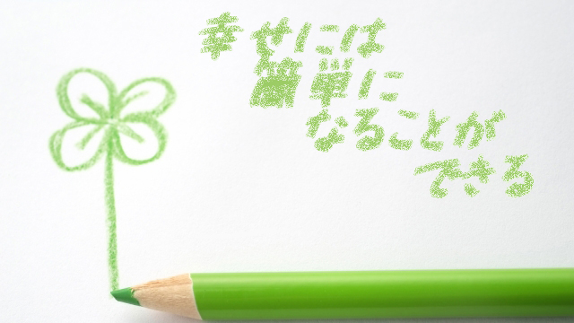

幸せには簡単になることができる
そう言うと抵抗を感じる人が多いかも知れません。でもそれは本当なのです。
幸せになる。幸せを感じながら生きることは実は簡単で、不幸をやめればよいのです。不幸をやめれば人はたちまち幸せになるのです。なぜなら「幸せ」はむしろ自然な状態なのに日頃とらわれている過去や未来への後悔、不安、心配ごとがそれを見えなくさせているだけだからです。
さらに人は幸福を、何か特別なことが起こったときの爆発的な喜びと混同していて、遠くへ手を伸ばして獲得するものだと思いこんでいるからです。
「大金が手に入ったら幸福になれるだろう」
「好きなあの人と一緒になれたら幸せだ」
「子どもの成績が上がったら」
このように私たちは幸せを外側の物事と結びつけて考えがちです。しかしこれら外的条件にヒモづけている限り真の幸せは訪れません。条件つきの幸福は本物ではないからです。その条件が消えれば、つかの間の幸せも消えてしまうでしょう。たとえ上のような願望が達成されても失う恐れや新たな不安がわき起こってくるからです。
それより大事な点。多くの人が幸せを感じられない理由は幸せより「不幸」を感じることに熱心だということです。
たとえば、不平不満ばかり言う人がよくいますが、そういう人は自ら不幸をつくり出していることに気がついていません。本人は理由あっての不満と言うでしょうが、実際環境を何度変えてもその人はいつも同じ不平不満を言っているのがその証拠です。
問題はその人のあり方であって、不平不満（不幸）を見つけることがアイデンティティになっているのです。習い性になっている。
だから不平不満（不幸）を止めればいい。
すると充足が見えてきます。実は充足や幸福は探すまでもなく至るところに存在しているのです。
不幸体質から脱出する
だから不幸をやめ「充足」を見ると決意するだけで良いのです。
たとえば
「毎日元気で仕事ができる」
「家族が今日も無事で帰ってきた」
「窓辺に沈む夕日が美しい」
「日本に生まれて良かった」
何だそんなことか！と言うならあなたは心の余裕がないということです。身の回りにある「満たされた現実」を見落としているのです。
しかし、色々な出来事は日々起こってきます。
その中には確かに理不尽としか思えないこともあるでしょう。
それでもそこに「不幸」の意味づけをしないことが大事です。わざわざ出来事に不幸のレッテルを貼って負のループに巻き込まれる必要はないのです。
私たちはともすれば「イヤな現実」に遭遇すると「このままだとやがてこうなってしまう」とか「今のうちに何か手を打たないと大変になる」と出口のない思考の堂々巡りにおちいりがちです。そのループこそがまさに不幸であってただちにその連鎖から抜け出なくてはなりません。
それなのに私たちはその思考のループからなかなか抜けられません。それは悩めば悩むほど良い方向に行くと信じているからです。
しかしこの方法はうまくいきません。悩み苦しめば事態が改善するわけではないからです。それはむしろ出来事と向き合っていないのです。だからまず「イヤな現実はイヤな現実」と認めその事実を感じきることが大切です。「どうしてこんなことが」とか「どうせ私はこんな人間だ」と思考するのではなく、怒りなら怒りを、悲しいなら悲しみをしっかり感じきって正面から受け入れることが必要です。
そうすることでそれらの問題は「不幸な出来事」から中立の「出来事」へと変わっていくでしょう。しっかり体現し味わうことでゼロにするということです。
しかしこのように言うと以下のように反論する人がいます。
「そんなこと言ってもどうしようもない災いもあるではないか」
「家族や友人を不慮の病や事故で失ったのはやっぱり不幸ではないか…」
それは個人としてその瞬間だけを切り取ってみれば「不幸」ですが、より大きな視点－全体としての視点－からみると「死」という事実があったということです。
冷たい言い方に感じるかも知れませんが、その事実そのものに本来幸・不幸という意味はありません。それを「不幸」と見なす個人があるだけです。
ささいなことに幸せを見る
私は中学1年のとき父親を突然事故で亡くしました。そのとき「なぜ自分だけこんな目に」と思いました。高校生のとき病気で入退院を繰り返し大学受験をフイにしたときも「なぜ自分だけが…」と嘆き、塾を創ったら以前勤めていた塾から「生徒を奪った」と裁判所に訴えられたときも「なぜオレだけこんな目に」と怒りにとらわれました。
いずれもその渦中にいるときは目の前がまっ暗になり「人生は絶望しかないのか」という思いでいっぱいでした。
しかし時の経過とともにその「不幸」の意味合いは変わりました。
誤解を恐れずに言うと、父を亡くしたから私は自立することができ、病気で受験できなかったから生徒の気持ちが分かるようになり、裁判沙汰があったからこそ社会経験の乏しかった私が短期間に成熟することができた。
さらに、家族の死を経験したからこそ家族が毎日無事に帰ってきて、食卓を囲むことの幸せを強く感じるということ。
私は今でも息子たちと食卓を囲んでいるとき「俺がこの子たちの年頃にはオヤジはもういなかったのだな」とふと思うことがあります。すると今自分が生きていて子どもたちとこうして過ごしていることが不思議に感じるのです。
この瞬間がいかに貴重か分かるからです。
すると「もう少しガンバってこの子たちと少しでも長く一緒にいよう」という気になります。
普通に家族がいて普通に毎日顔を合わせて生活している。そんな変哲のない人生がいかに得がたく輝かしく、そして奇跡のような貴重な瞬間であるか身にしみて分かるのです。
こんな小さなことにも、見ようと思えば充足（幸せ）はキラキラと輝きを放っているのです。
その輝きに比べたら、子どもが勉強しないとか内申書がどうしたということなど、どうでもよい瑣末なことに過ぎません。
幸せの循環にのる
そう考えれば父親の死も私に大切なことを教えてくれたということになります。
父親の死は「事実」としてありながらその意味づけは時間の経過と共に変わったといえるのです。
これは何も不幸を幸福と思い込めという話ではありません。何度も繰り返すように私たちは出来事に勝手に意味づけし、幸だ不幸だとレッテル貼っていることにまず気づけばよいということです。
そのときは「不幸」としか思えなかった出来事が今の自分を深い部分で支えている。今の自分に欠かせない重要な要素になっているということ。それは思い出してみれば誰にもあることです。限られた個人的な視点では見えないがもっと大きな視点で見れば、個々の出来事は全体にとって欠かせないピースだということです。だから次のようなことを心がけるべきです。
一見マイナスな出来事が起こったらいちいち「不幸だ」「理不尽だ」「世の中まちがっている」などと拡大解釈して考えないこと。
1つの出来事をさらなる不幸に関連づけてループしないこと。
「イヤなこと」が起きたら「イヤだなア」と思ってしっかり感じ切って終わる。または「これは一見マイナスに見えるが本当はそうではないかも知れない。分からない」と視点を変えてみる。そして後はやりたいこと、情熱を傾けられること、または目の前のやるべきことをしっかりやりましょう。
そのうち「不幸」は去っていきます。そして充足が表れてきます。最初はささいなことに充足を見出していきましょう。
夕日がきれいだ
夜景がすばらしい
愛犬のつぶらな瞳が愛らしい
こんなふうにです。
不幸を握りしめることをやめ充足を見続ければよいのです。
そうすれば幸せの循環がやってくるでしょう。あとはその流れに乗るだけです。
そしていつしかドミノ倒しのように「幸福な人生」が展開していることに気づくでしょう。